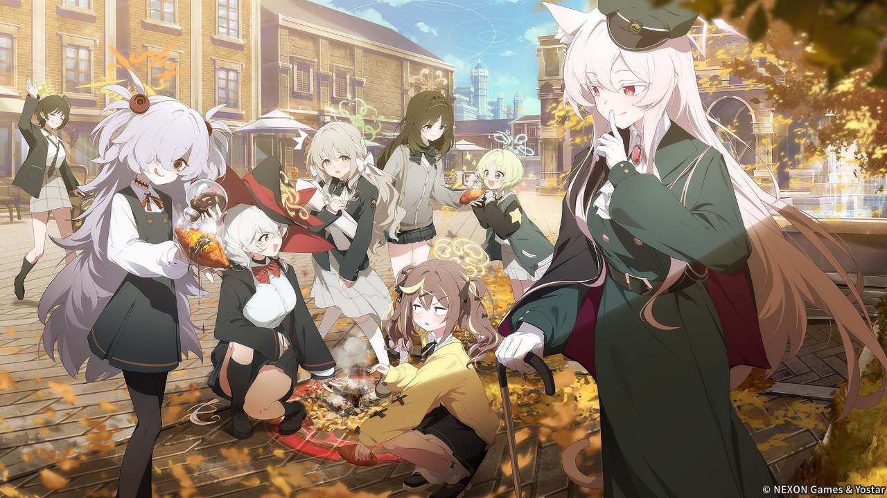

大阪さんぽの しおりなんば → 新世界 → 天王寺 1日コース
8か所まわって、記念メダルをもらおう

集合11:00 なんば駅
解散19:00 天王寺
歩く距離約5km
つかいかた：下のタブで切りかえます。STAMPやMAPで①〜⑧をタップすると、その場所の写真を撮って記録できます。撮った時刻と、チェックポイントからの距離も一緒に残ります。MAPで「足あとを記録する」をオンにしておくと、あとで歩いた道と写真を地図で振り返れます。ホーム画面に追加すると、アプリのように開けます。
MAP
きょうのみちのり
※ 実際の位置関係に合わせて描いています（北が上）。点線は歩く予定の順番です。
歩く予定歩いた足あと写真をつないだ線
ドラッグで移動、ピンチや＋−で拡大
歩いた距離—
写真0枚
記録した時間—
iPhoneでは、画面を消したりほかのアプリを使ったりしている間は記録が止まります。その区間は、写真を撮った場所をつないで表示します。
MISSION
スタンプ台紙
枠をタップして写真を撮ると、その写真が台紙に貼られます。パネルと一緒に撮るのがおすすめ。デジタルスタンプを取ったら、同じ画面でチェックしておきましょう。
スマホで二次元コードを読んだら、丸の中にチェック。8こ集まったらアニメイト天王寺でメダルと交換！
PHOTO
寄り道アルバム
チェックポイント以外でも、気になったところを撮っておけます。
まだ寄り道の写真はありません。
8か所の写真とスタンプ、歩いた距離を1枚の画像にまとめます。
iPhoneでは、このページで撮った写真は写真アプリに自動では残りません。帰る前にここから保存しておきましょう。
このブラウザでは写真を保存できません。プライベートブラウズをオフにして開き直してください。
SCHEDULE
にってい
シャーレ案内係
- スタンプ①リトル大阪 ekimoなんば駅の中なので、集合してすぐスタート（9:00〜22:30）
- スタンプ②わなか なんば店開店直後に。コラボたこ焼き（各850円）で腹ごしらえ
- 観光道頓堀・法善寺横丁グリコサインを見ながら軽く散歩
- スタンプ③アニメイト大阪日本橋道頓堀から歩いて約10分
- 移動でんでんタウン → 新世界日本橋筋を南へ歩いて約15分
- スタンプ④通天閣わくわくランド（地下1階）入場無料（9:00〜21:30）。てっぺんのゲヘナの旗もチェック
- お昼新世界で串カツ食べたあとはジャンジャン横丁をぶらぶら
- スタンプ⑤SPAWORLD HOTEL & RESORTパネルは入館口の前にあるようです。見当たらなければフロントで聞いてみましょう
- スタンプ⑥Caféどうぶつ園の横コラボドリンク（各900円）でひと休み。18時閉店
- 観光てんしば・茶臼山公園をのんびり散歩
- スタンプ⑦アベノラクバス（あべのHoop 4F）グッズを買うならここで（〜19:00）
- スタンプ⑧アニメイト天王寺 ★メダル引換8こ目を押したら、そのままメダルと交換（土日は19時まで）
- 観光あべのハルカス300日の入りは17時40分ごろ。夕焼けから夜景まで
- 解散天王寺駅おつかれさまでした、先生。このあとは、あべの・天王寺あたりで夕ごはん
CHECK
もちもの
NOTICE
注意事項
- スマホの位置情報（GPS）をオンにする
- ブラウザのプライベートモードはオフにする
- メダルの交換は1人1日1回まで
- 遅れたら、通天閣わくわくランド（21:30まで）でも交換できる
- お店では大量注文や場所取りをしない
- 前の日に公式Xで営業時間とメダルの在庫を確認する
BUDGET
おこづかい
| 円 | |
| 円 | |
| 円 | |
| 円 | |
| 円 | |
| 円 | |
| 合計 | 円 |
グッズを3,000円以上買うとステッカー、10,000円以上で紙ショッパーがもらえます。
MEMO